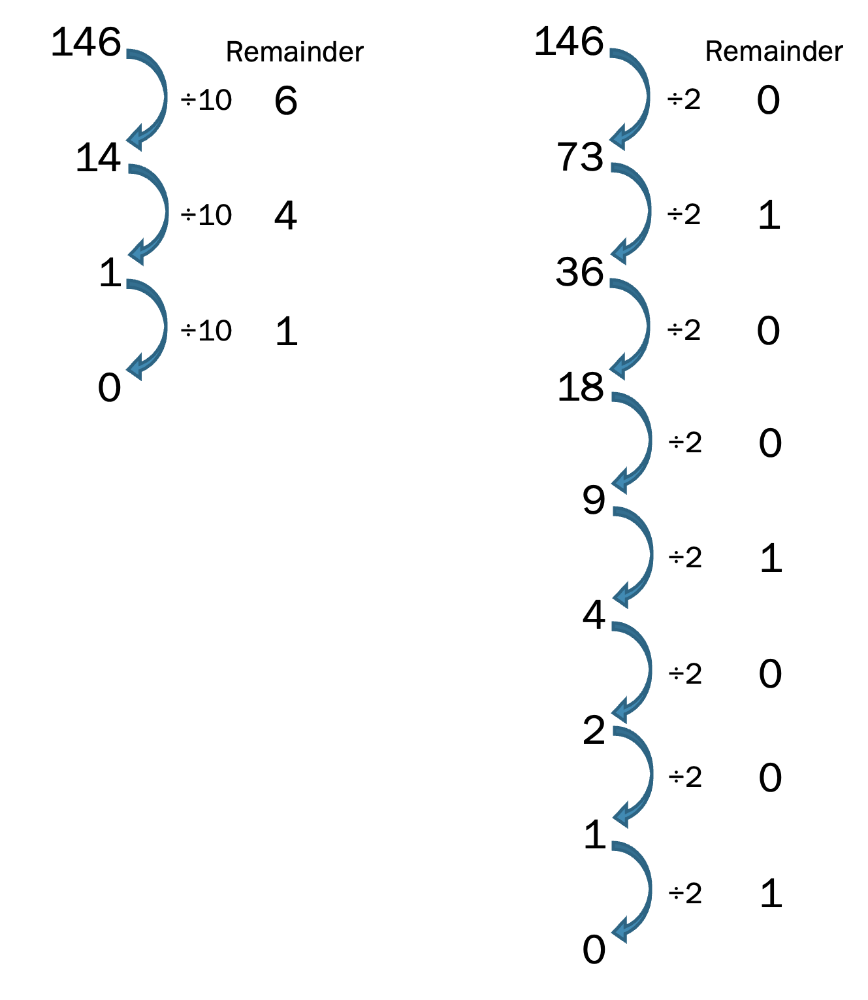

Introduction to Classical Bits and Gates#
Warning
These lecture notes are a work in progress and are not a replacement for watching the lecture video, it’s intended to be a supplementary reading after watching the lecture.
Learning outcomes
In this lecture we revise the good old simpler concepts of bits and their manipulation to set the stage for the fundamental blocks of quantum computing, i.e., qubits and their manipulation. As we go through the sections below, we will:
Build an understanding of the basics of classical computing
Gain familiarity with binary encoding
Learn about classical gates
Introduction#
In classical computing, which we usually call just computing, we transform or map every mathematical problem into a sequence of tasks, which is performed by computer, and at the end we get the desired result. These sequences of tasks, known as algorithms, consist of an exact sequence of simpler tasks that can be understood by computer. When this exact sequence is expressed in a way that computer understands, we call it a computer program. To understand, and organise well, the algorithms are often broken down to smallest possible building blocks. We will discuss some of these building blocks now, and see how the role of bits comes into play.
Binary Data#
Most algorithms require an input in some form, which is required to feed into the algorithm, and we get some result at the end. For example, addition is an algorithm, that requires input of two numbers, and gives the result, that is the sum of two numbers.
graph LR;
A(Input) --> |Feed into| B{Algorithm} --> |Computation finished| C(Result)
a(12) & b(15) --> add{Addition} --> sum(27)
The input information can in principle be anything, however over the decades we have learnt to represent it in some standardised format which is easily understood by computers. For most applications, the input can be broken down to a list or collection of simpler objects, and the simpler objects are either a number, or text. The numbers themselves can be integers, or real numbers. The text can be english, or any other language, and within each language, a text is an ordered sequence of characters of alphabets and symbols.
Bit#
The smallest unit of input, logically for us, and also for a computer, is something called a bit that can either be True or False - it exists in one of two possible states. Below are some more examples of such pairs of possible states.
graph TD;
True <---> False;
Head <---> Tail;
Yes <---> No;
Good <---> Bad;
Like <---> Dislike;
1 <---> 0;
Physical Representation#
The above are some of the daily life analogies of properties/informations that can be described by choosing one of the two possibilities. We say that such properties have 1 bit of information, and the two states are usually represented as 0 and 1. More complex information can be represented by a multitude of such bits, and is usually stored in computers, or other forms of modern storage using technologies which can (i) prepare an object in one of two clearly distinguishable physical states, and (ii) have tools available that can detect in which of the two states the object is in. Typical examples include:
Switches and wires use voltages to store bits where a high voltage corresponds to 1 and a low voltage corresponds to 0.
CDs consist of a very large number of tiny pits that are either etched or not, and based on that, the pits are either reflective or not. We use this information to store and detect 0s and 1s.
Hard drives consists of similar to pits of CDs, tiny blocks of magnetic materials, and we store the bits by orienting the magnetic fields of those blocks.
Modern computers have tiny circuits composed of transistors to (i) store and (ii) manipulate bits.
Now we know that smallest information is a bit (short for binary digit, and yes the pun is intended), and can be represented by either 0 or 1. It is easy to see that using combinatorics, it’s possible to encode information of more complex systems. For example, if we have two coins, they both can exist independently, upon flipping, in either of the Head or Tail state, or equivalently, in 1 or 0 state. The possible outcomes of a pair of coins are 4 different states, namely 00, 01, 10, and 11. Thus, with 2 bits, we can distinguish among 4 possibilities. Conversely, for any system that has four possible distinct states, we can encode its state information in 2 bits. Recall in the lecture where we use the example of tossing coins as a means of conveying information – bits or binary data is a means of storing and transmitting information using 0s and 1s. The more bits we have the greater the amount of information we can convey.
So to generalise, 3 bits can describe 8 possibilities, and in general \(n\) bits can describe \(2^n\) possibilities. It’s easy to now see that adding 1 bit doubles the amount of information you can convey.
Most common examples of such ‘binary encoding’ include the following:
Numbers: There is natural mathematical correspondence between numbers expressed in decimal notation that we use everyday to binary representation. We will discuss it soon below.
Strings: ASCII system provides binary encoding to English alphabet, decimal numbers and most commonly used special characters and symbols. It uses 8 bit for each character and each of the characters is mapped to a unique 8 bit sequence. There are total \(2^8=256\) distinct bit sequences, each mapped to one unique character.
Conversion from decimal to binary#
Let us quickly recall how we represent numbers. What we usually refer to as decimal system, consists of using a unique sequence of digits for any number. For examples the number 34593, thirty four thousand five hundred and ninety three, is five digits. We have ten digits, namely 0, 1, 2, …8, 9 and every number is expressed as sum of one-digit multiple of tens, hundreds, thousands etc (which are powers of base 10). 34593 is essentially
Thus, 34593 is actually a decimal encoded representation of the number which by practice we identify as 34593. However, by choosing different base, we can represent the same number in a different encoding. In computer science, for various purposes, the most commonly used encodings are Binary, Octal and Hexadecimal. In these representations, the numbers are expressed as the sum of one-digit multiples of powers of the base, which is 8 for octal, 16 for hexadecimal, and 2 for binary.
At hardware level, everything is expressed in binary, so let’s see what the binary encoding looks like. We can use a repeated division method to get the digits of a decimal number in the binary system. The example below shows how we can extract the binary representaion of the number 146 as \({\color{blue} 10010010}\). See the expansions below for decimal:
and the same expansion, but in powers of 2:
The figure below show base 10 to base 2 conversion works by repeated division by 2.
{kind=link}

Decimal vs Binary Conversion Animation
Base 10
Base 2
Adding in Binary#
Addition follows the same rules in binary as they do in decimal however since there are only two digits we have a few changes we need to implement.
The following rule table represents the addition in binary digits clearly.
| | | | |
0 + 0 = Sum : 0, Carry:0
0 + 1 = Sum : 1, Carry:0
1 + 0 = Sum : 1, Carry:0
1+ 1 = Sum : 0, Carry:1
graph LR;
a --> s(sum = a or b);
a --> c(carry = a and b);
b --> s;
b --> c
Gates and Operations in Binary#
Now that we’ve understood what Bits are, we need to understand how do we manipulate bits to perform and compute operations on this information which might be useful to us.
Gates represent the types of manipulation we can perform on Bits, Gates act on a bit or a group of bits to provide a deterministic output.
Let’s look at some of the basic gates in Classical Computing.
NOT gate#
The most simple gate we can perform on a Bit is the NOT gate, it simply flips a bit, taking it from 0 to 1 and from 1 to Zero.

Input |
Output |
|---|---|
0 |
1 |
1 |
0 |
The NOT gate can be observed to be a reversible gate, the input can always be recovered from the output, we can just flip the output to recover the original input. This is an important feature and we will come back to it later.
AND gate#
The second gate is a 2 bit gate called AND gate, it gives the output 1 when both the Inputs are 1 and it is 0 for all other cases.

Input A |
Input B |
Output Q |
|---|---|---|
0 |
0 |
0 |
0 |
1 |
0 |
1 |
0 |
0 |
1 |
1 |
1 |
We can notice that the AND gate unlike the NOT gate is not reversible we can’t recover both the input qubits from the output of the AND gates.
OR gate#
Another fundamental 2-bit gate is the OR gate, it gives the output 1 when at least one of the inputs is 1 and it is 0 only when both inputs are 0.

Input A |
Input B |
Output Q |
|---|---|---|
0 |
0 |
0 |
0 |
1 |
1 |
1 |
0 |
1 |
1 |
1 |
1 |
Like the AND gate, the OR gate is also irreversible, given only the output we can’t recover both the input bits that produced it.
XOR gate#
Finally we look at the XOR gate, whose truth table is shown below.

Input A |
Input B |
Output Q |
|---|---|---|
0 |
0 |
0 |
0 |
1 |
1 |
1 |
0 |
1 |
1 |
1 |
0 |
It is not common to introduce an XOR gate as part of the fundamental gates of Classical computing however it provides an important analog to gates within Quantum Computing
Similar to the AND gate we can observe that XOR gate is also irreversible and we can’t recover both the input qubits from the output.
Classical Half-Adder using gates#
We can define a circuit that performs the additon operation we had defined previously using only the gates that we have introduced previously
{kind=link}
{kind=link}
Classical half-adder circuit shown above has the same input-output characteristics that we expected from the addition operations defined in the previous sections described by the truth table below.
It is important to notice another key feture of the above circuit, we were able to copy the inputs A and B, i.e the single wire carrying the signal A could be split into two wires both carrying the same bit A, this feature will introduce us to an important difference between classical and quantum information later in the lecture.
Features of Classical computing#
Before moving to Qubits and Quantum Computing, let’s list down all the important features of Classical Computing that we have encountered so far.
We’ve seen that bits carry deterministic pieces of information.
We’ve also observed that classical gates can be both reversible and irreversible in nature. For example, NOT gate is reversible in nature whereas the 2-bit gates such as AND gate and XOR gate are irreversible.
It can be a shown that a small subset of all the existing gates can be used to be build all the logical operations that can exist.
These complete subsets of Gates are said to form a universal gate set.
The AND, OR and NOT is one example of a universal gate set.
References#
The following references are optional reading material:
The following chapters of the textbook Introduction to Classical and Quantum Computing (pdf) : 1.1, 1.2, 1.3.
Section 3.1.2 - Circuits of the textbook Nielsen, M.A. and Chuang, I.L. (2010) Quantum Computation and Quantum Information: 10th Anniversary Edition. Cambridge: Cambridge University Press.